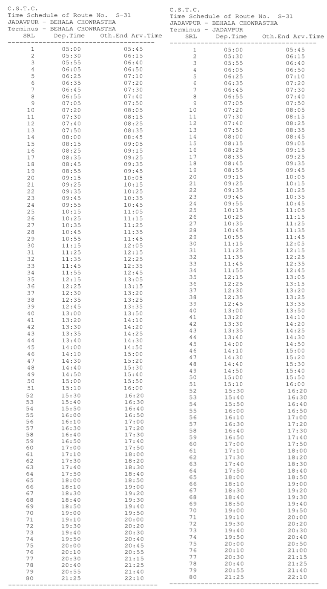

S-31 Kolkata City Bus Timetable
JADAVPUR → BEHALA CHOWRASTHA and reverse direction departure and terminal arrival times.
JADAVPUR BEHALA CHOWRASTHA
| # | Departure | Arrival | Ride |
|---|---|---|---|
| 1 | 5:00 AM | 5:45 AM | 45m |
| 2 | 5:30 AM | 6:13 AM | 43m |
| 3 | 5:50 AM | 6:20 AM | 30m |
| 4 | 6:30 AM | 6:50 AM | 20m |
| 5 | 6:25 AM | 7:10 AM | 45m |
| 6 | 6:33 AM | 7:20 AM | 47m |
| 7 | 6:43 AM | 7:30 AM | 47m |
| 8 | 6:55 AM | 8:00 AM | 1h 05m |
| 9 | 7:05 AM | 7:50 AM | 45m |
| 10 | 7:20 AM | 8:05 AM | 45m |
| 11 | 7:30 AM | 8:13 AM | 43m |
| 12 | 8:13 AM | 8:30 AM | 17m |
| 13 | 8:20 AM | 8:40 AM | 20m |
| 14 | 7:50 AM | 8:35 AM | 45m |
| 15 | 8:00 AM | 8:45 AM | 45m |
| 16 | 9:05 AM | 9:15 AM | 10m |
| 17 | 9:15 AM | 9:25 AM | 10m |
| 18 | 9:25 AM | 9:35 AM | 10m |
| 19 | 8:45 AM | 9:35 AM | 50m |
| 20 | 9:55 AM | 10:05 AM | 10m |
| 21 | 10:05 AM | 10:15 AM | 10m |
| 22 | 9:35 AM | 10:25 AM | 50m |
| 23 | 9:45 AM | 10:35 AM | 50m |
| 24 | 9:55 AM | 10:45 AM | 50m |
| 25 | 10:15 AM | 11:05 AM | 50m |
| 26 | 10:25 AM | 11:15 AM | 50m |
| 27 | 10:35 AM | 11:25 AM | 50m |
| 28 | 10:45 AM | 11:35 AM | 50m |
| 29 | 10:55 AM | 11:45 AM | 50m |
| 30 | 11:15 AM | 12:05 PM | 50m |
| 31 | 11:25 AM | 12:15 PM | 50m |
| 32 | 11:35 AM | 12:25 PM | 50m |
| 33 | 11:45 AM | 12:35 PM | 50m |
| 34 | 11:55 AM | 12:45 PM | 50m |
| 35 | 12:05 PM | 1:05 PM | 1h 00m |
| 36 | 12:30 PM | 1:13 PM | 43m |
| 37 | 12:35 PM | 1:30 PM | 55m |
| 38 | 12:45 PM | 1:35 PM | 50m |
| 39 | 1:00 PM | 1:45 PM | 45m |
| 40 | 1:20 PM | 1:50 PM | 30m |
| 41 | 1:30 PM | 2:10 PM | 40m |
| 42 | 1:45 PM | 2:20 PM | 35m |
| 43 | 2:00 PM | 2:35 PM | 35m |
| 44 | 2:10 PM | 2:40 PM | 30m |
| 45 | 2:20 PM | 2:50 PM | 30m |
| 46 | 2:30 PM | 3:00 PM | 30m |
| 47 | 2:50 PM | 3:20 PM | 30m |
| 48 | 3:00 PM | 3:30 PM | 30m |
| 49 | 3:10 PM | 3:40 PM | 30m |
| 50 | 3:20 PM | 3:50 PM | 30m |
| 51 | 3:30 PM | 4:00 PM | 30m |
| 52 | 3:40 PM | 4:20 PM | 40m |
| 53 | 3:50 PM | 4:30 PM | 40m |
| 54 | 4:00 PM | 4:40 PM | 40m |
| 55 | 4:10 PM | 4:50 PM | 40m |
| 56 | 4:20 PM | 4:50 PM | 30m |
| 57 | 4:30 PM | 5:00 PM | 30m |
| 58 | 4:40 PM | 5:20 PM | 40m |
| 59 | 4:50 PM | 5:30 PM | 40m |
| 60 | 5:00 PM | 5:40 PM | 40m |
| 61 | 5:10 PM | 5:50 PM | 40m |
| 62 | 5:30 PM | 6:00 PM | 30m |
| 63 | 5:40 PM | 6:10 PM | 30m |
| 64 | 6:00 PM | 6:20 PM | 20m |
| 65 | 6:10 PM | 6:30 PM | 20m |
| 66 | 6:20 PM | 6:40 PM | 20m |
| 67 | 6:30 PM | 6:50 PM | 20m |
| 68 | 6:40 PM | 7:00 PM | 20m |
| 69 | 6:50 PM | 7:10 PM | 20m |
| 70 | 7:00 PM | 7:20 PM | 20m |
| 71 | 7:10 PM | 7:30 PM | 20m |
| 72 | 7:20 PM | 7:40 PM | 20m |
| 73 | 7:30 PM | 7:50 PM | 20m |
| 74 | 7:40 PM | 8:00 PM | 20m |
| 75 | 7:50 PM | 8:10 PM | 20m |
| 76 | 8:00 PM | 8:20 PM | 20m |
| 77 | 8:10 PM | 8:30 PM | 20m |
| 78 | 8:20 PM | 8:40 PM | 20m |
| 79 | 8:30 PM | 8:45 PM | 15m |
| 80 | 8:40 PM | 9:00 PM | 20m |
| 81 | 8:50 PM | 9:15 PM | 25m |
| 82 | 9:00 PM | 9:25 PM | 25m |
| 83 | 9:15 PM | 9:35 PM | 20m |
| 84 | 9:25 PM | 9:45 PM | 20m |
| 85 | 9:35 PM | 10:10 PM | 35m |
| 86 | 9:45 PM | — | — |
| 87 | 10:10 PM | — | — |
- Chowrastha
- James Long Sarani
- Ramkrishna Ashram
- Motilal Gupta Rd
- Siriti More
- Karunamoyee
- D.P.Sasmal Rd
- Lake Gardens
- Jadavpur
This direction has 87 departure entries and 85 arrival entries in the supplied schedule image. Unmatched values are shown as — and should be checked against the original notice.
BEHALA CHOWRASTHA JADAVPUR
| # | Departure | Arrival | Ride |
|---|---|---|---|
| 1 | 5:00 AM | 5:45 AM | 45m |
| 2 | 5:30 AM | 6:15 AM | 45m |
| 3 | 5:50 AM | 6:40 AM | 50m |
| 4 | 6:30 AM | 6:50 AM | 20m |
| 5 | 6:25 AM | 7:10 AM | 45m |
| 6 | 6:35 AM | 7:20 AM | 45m |
| 7 | 6:43 AM | 7:30 AM | 47m |
| 8 | 6:55 AM | 8:00 AM | 1h 05m |
| 9 | 7:05 AM | 7:50 AM | 45m |
| 10 | 7:20 AM | 8:05 AM | 45m |
| 11 | 7:30 AM | 8:13 AM | 43m |
| 12 | 8:13 AM | 8:30 AM | 17m |
| 13 | 8:20 AM | 8:40 AM | 20m |
| 14 | 7:50 AM | 8:35 AM | 45m |
| 15 | 8:00 AM | 8:45 AM | 45m |
| 16 | 9:05 AM | 9:15 AM | 10m |
| 17 | 9:15 AM | 9:25 AM | 10m |
| 18 | 9:25 AM | 9:35 AM | 10m |
| 19 | 8:45 AM | 9:35 AM | 50m |
| 20 | 9:55 AM | 10:05 AM | 10m |
| 21 | 10:05 AM | 10:15 AM | 10m |
| 22 | 9:35 AM | 10:25 AM | 50m |
| 23 | 9:45 AM | 10:35 AM | 50m |
| 24 | 9:55 AM | 10:45 AM | 50m |
| 25 | 10:15 AM | 11:05 AM | 50m |
| 26 | 10:25 AM | 11:15 AM | 50m |
| 27 | 10:35 AM | 11:25 AM | 50m |
| 28 | 10:45 AM | 11:35 AM | 50m |
| 29 | 10:55 AM | 11:45 AM | 50m |
| 30 | 11:15 AM | 12:05 PM | 50m |
| 31 | 11:25 AM | 12:15 PM | 50m |
| 32 | 11:35 AM | 12:25 PM | 50m |
| 33 | 11:45 AM | 12:35 PM | 50m |
| 34 | 11:55 AM | 12:45 PM | 50m |
| 35 | 12:05 PM | 1:05 PM | 1h 00m |
| 36 | 12:30 PM | 1:20 PM | 50m |
| 37 | 12:35 PM | 1:35 PM | 1h 00m |
| 38 | 12:45 PM | 1:45 PM | 1h 00m |
| 39 | 1:00 PM | 1:50 PM | 50m |
| 40 | 1:20 PM | 2:10 PM | 50m |
| 41 | 1:30 PM | 2:20 PM | 50m |
| 42 | 1:45 PM | 2:30 PM | 45m |
| 43 | 2:00 PM | 2:40 PM | 40m |
| 44 | 2:10 PM | 3:00 PM | 50m |
| 45 | 2:20 PM | 3:10 PM | 50m |
| 46 | 2:30 PM | 3:30 PM | 1h 00m |
| 47 | 2:50 PM | 3:40 PM | 50m |
| 48 | 3:00 PM | 3:50 PM | 50m |
| 49 | 3:10 PM | 4:00 PM | 50m |
| 50 | 3:20 PM | 4:20 PM | 1h 00m |
| 51 | 3:30 PM | 4:30 PM | 1h 00m |
| 52 | 3:40 PM | 4:40 PM | 1h 00m |
| 53 | 3:50 PM | 4:50 PM | 1h 00m |
| 54 | 4:00 PM | 4:50 PM | 50m |
| 55 | 4:10 PM | 5:00 PM | 50m |
| 56 | 4:20 PM | 5:20 PM | 1h 00m |
| 57 | 4:30 PM | 5:30 PM | 1h 00m |
| 58 | 4:40 PM | 5:40 PM | 1h 00m |
| 59 | 4:50 PM | 5:50 PM | 1h 00m |
| 60 | 5:00 PM | 6:00 PM | 1h 00m |
| 61 | 5:10 PM | 6:10 PM | 1h 00m |
| 62 | 5:30 PM | 6:20 PM | 50m |
| 63 | 5:40 PM | 6:30 PM | 50m |
| 64 | 6:00 PM | 6:40 PM | 40m |
| 65 | 6:10 PM | 6:50 PM | 40m |
| 66 | 6:20 PM | 7:00 PM | 40m |
| 67 | 6:30 PM | 7:10 PM | 40m |
| 68 | 6:40 PM | 7:20 PM | 40m |
| 69 | 6:50 PM | 7:30 PM | 40m |
| 70 | 7:00 PM | 7:40 PM | 40m |
| 71 | 7:10 PM | 7:50 PM | 40m |
| 72 | 7:20 PM | 8:00 PM | 40m |
| 73 | 7:30 PM | 8:10 PM | 40m |
| 74 | 7:40 PM | 8:20 PM | 40m |
| 75 | 7:50 PM | 8:30 PM | 40m |
| 76 | 8:00 PM | 8:40 PM | 40m |
| 77 | 8:10 PM | 8:50 PM | 40m |
| 78 | 8:20 PM | 9:00 PM | 40m |
| 79 | 8:30 PM | 9:15 PM | 45m |
| 80 | 8:40 PM | 9:25 PM | 45m |
| 81 | 8:50 PM | 9:35 PM | 45m |
| 82 | 9:00 PM | 9:45 PM | 45m |
| 83 | 9:15 PM | 10:10 PM | 55m |
| 84 | 9:25 PM | — | — |
| 85 | 9:35 PM | — | — |
| 86 | 9:45 PM | — | — |
| 87 | 10:10 PM | — | — |
- Jadavpur
- Lake Gardens
- D.P.Sasmal Rd
- Karunamoyee
- Siriti More
- Motilal Gupta Rd
- Ramkrishna Ashram
- James Long Sarani
- Chowrastha
This direction has 87 departure entries and 83 arrival entries in the supplied schedule image. Unmatched values are shown as — and should be checked against the original notice.
Official schedule source
Source: West Bengal Transport Department / CSTC timetable image supplied for this route.
Schedule data imported on 2026-10-06. Timings may change; confirm at the bus stand or with the operator before travel.
← All Kolkata city bus routes

S-31 bus timetable FAQs
What time does S-31 bus start?
The first listed departure for this route is 5:00 AM. The last listed departure in the supplied schedule is 10:10 PM.
Does this page show both directions?
Yes. This page lists the official CSTC schedule for both directions where both direction records are available.
Are these timings official?
The source supplied for this page is the CSTC/West Bengal Transport schedule image. Timings can change, so confirm before travelling.